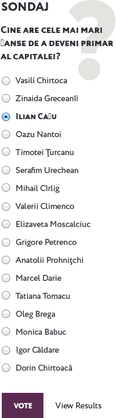
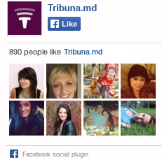

Recente Interviuri
Mihai Severovan: Chișinăul are nevoie de profesioniști!
24 mai 2015, 8:00
În cadrul unui interviu acordat portalului TRIBUNA, Mihai
Severovan, preşedinte al Asociaţiei Patronale a Serviciilor Publice din Republica Moldova, a
vorbit de ce a decis să candideze independent la funcția de consilier în Consiliul Municipal ...
editorial
Elefanții în prăvălia cu porțelan
Urmărind atent acțiunile politicienilor noștri, vreai nu vreai, ajungi la concluzia că sînt ca niște elefanți într-o prăvălie ...
Continuare

